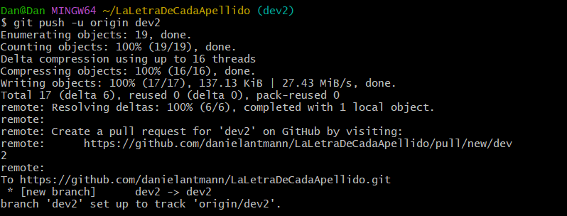

Para la creación de ramas, utilizamos el siguiente comando: git branch
Para movernos entre las ramas creadas utilizamos el siguiente comando: git checkout
< nombre
de la rama > . Para movernos entre las ramas creadas utilizamos el siguiente comando: git checkout
< nombre de la rama > .

Antes de fusionar la rama (branch) en la que estamos trabajando con con la principal (main) u otra,
puede interesarte subir la rama al repositorio en linea con el comando: git push -u origin
Una vez subido los cambios al reposit en linea, nos movemos de la rama en la que estamos trabajando hacia la rama con la que queremos fusionarla(merge) , con el comando: git checkout
< nombre de la rama > . Una vez subido los cambios al reposit en linea, nos movemos de la rama en la que estamos trabajando hacia la rama con la que queremos fusionarla(merge) , con el comando: git checkout
< nombre de la rama > . Una vez situados en la rama seleccionada, utilizamos
el comando: git merge < nombre de la rama > . Si en este paso no da
ningún tipo de error podemos volver a subir los nuevos cambios a nuestro repositorio en linea utilizando
nuevamente el comando: git push -u origin < nombre de la rama > .


git fetch es el comando que le dice a tu git local que recupere la última información de los metadatos
del original (aunque no hace ninguna transferencia de archivos. Es más bien como comprobar si hay algún
cambio disponible).
git pull por otro lado comprueba si existe algún cambio disponible y trae (copia) esos cambios del repositorio remoto.
git pull por otro lado comprueba si existe algún cambio disponible y trae (copia) esos cambios del repositorio remoto.
.png)
Para movernos a versiones anteriores de nuestro proyecto utilizamos el comando: git log ,
para ver el nombre(código) de la version a la que queremos ir, luego utilizamos el comando: git
checkout
Para volver a la ultima rama en la que estábamos utilizamos el comando: git switch - .
< código de la rama a la cual deseamos ir > . Para volver a la ultima rama en la que estábamos utilizamos el comando: git switch - .

Se pueden utilizar varias características para añadirle seguridad a tu reposición en linea:
1- Podemos administrar el acceso a tu repositorio, y establecer quien puede ver y modificar tu código.
2- Administrar el gráfico de dependencias, este se genera automáticamente para todos los repositorios públicos. Puedes optar por habilitarlo para bifurcaciones y repositorios privados. El gráfico de dependencias interpreta los archivos de manifiesto y bloqueo de un repositorio para identificar dependencias.
3- Habilitar las Dependabots alerts, Dependabot security updates y Dependabot version update.
Las Dependabots alerts, sirven para identificar una dependencia que presenta una vulnerabilidad en la gráfica de dependencias. Puedes habilitar las Dependabot alerts para cualquier repositorio.
Si tienes habilitado las Dependabots alerts, puedes habilitar las Dependabot security updates para estar al tanto de solicitudes de cambio y poder detectar las vulnerabilidades de las mismas.
Las Dependabot version uptdate sirve para actualizar automáticamente las solicitudes de cambios para mantener tus dependencias actualizadas.
4- Administrar la revisión de dependencias, esta característica te permite visualizar los cambios a las dependencias en las solicitudes de cambios antes de que se fusionen con tus repositorios. 5- Configuración de Code Scanning
Puedes configurar el code scanning para identificar automáticamente vulnerabilidades y errores en el código almacenado en el repositorio
Para mas información puedes consultar el siguiente enlace: Documentación de seguridad de GitHub
1- Podemos administrar el acceso a tu repositorio, y establecer quien puede ver y modificar tu código.
2- Administrar el gráfico de dependencias, este se genera automáticamente para todos los repositorios públicos. Puedes optar por habilitarlo para bifurcaciones y repositorios privados. El gráfico de dependencias interpreta los archivos de manifiesto y bloqueo de un repositorio para identificar dependencias.
3- Habilitar las Dependabots alerts, Dependabot security updates y Dependabot version update.
Las Dependabots alerts, sirven para identificar una dependencia que presenta una vulnerabilidad en la gráfica de dependencias. Puedes habilitar las Dependabot alerts para cualquier repositorio.
Si tienes habilitado las Dependabots alerts, puedes habilitar las Dependabot security updates para estar al tanto de solicitudes de cambio y poder detectar las vulnerabilidades de las mismas.
Las Dependabot version uptdate sirve para actualizar automáticamente las solicitudes de cambios para mantener tus dependencias actualizadas.
4- Administrar la revisión de dependencias, esta característica te permite visualizar los cambios a las dependencias en las solicitudes de cambios antes de que se fusionen con tus repositorios. 5- Configuración de Code Scanning
Puedes configurar el code scanning para identificar automáticamente vulnerabilidades y errores en el código almacenado en el repositorio
Para mas información puedes consultar el siguiente enlace: Documentación de seguridad de GitHub